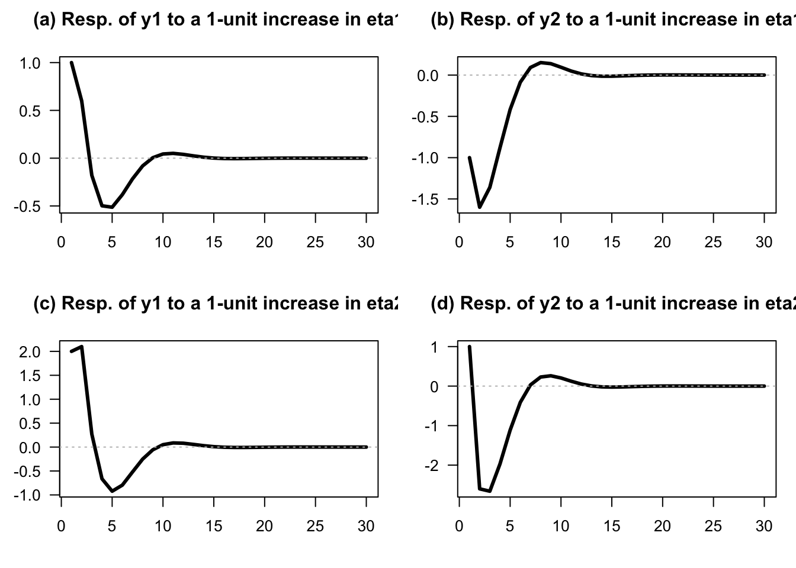
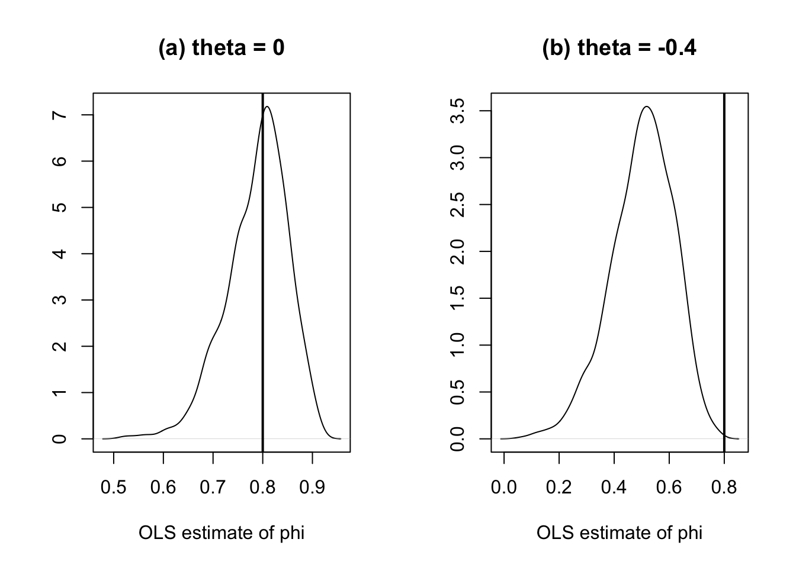
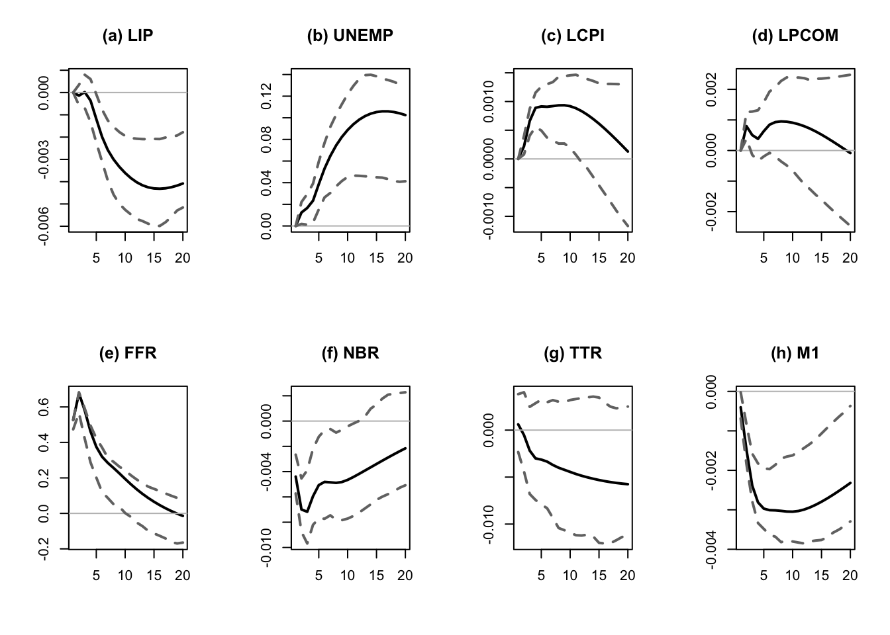
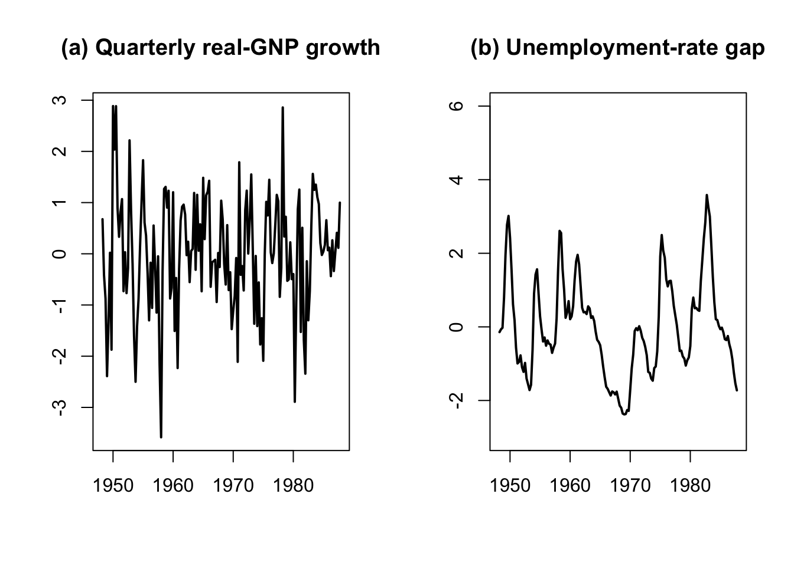
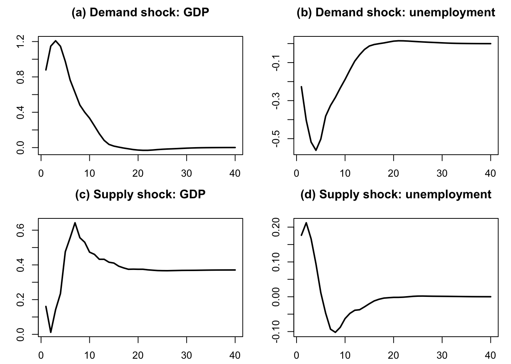

Chapter 3 Multivariate models
This section presents Vector Auto-Regressive Moving-Average (SVARMA) models. These models are widely used in macroeconomic analysis. While simple and easy to estimate, they make it possible to conveniently capture the dynamics of complex multivariate systems. VAR popularity is notably due to Sims (1980)’s influential work. A comprehensive survey is proposed by J. H. Stock and Watson (2016).
In economics, VAR models are often employed in order to identify structural shocks, that are independent primitive exogenous forces that drive economic variables (Ramey (2016)). They are often given a specific economic meaning (e.g., demand and supply shocks). Once structural shocks have been identified, researchers use the resulting Structural VAR model to produce Impulse Response Functions that describe the dynamic reactions of endogenous variables to the shocks.
Working with these models (VAR and VARMA models) often involves two steps: in a first step, the reduced-form version of the model is estimated; in a second step, structural shocks are identified and IRFs are produced.
3.1 Definition of VARs (and SVARMA) models
Definition 3.1 ((S)VAR model) Let \(y_{t}\) denote a \(n \times1\) vector of (endogenous) random variables. Process \(y_{t}\) follows a \(p^{th}\)-order (S)VAR if, for all \(t\), we have \[\begin{eqnarray} \begin{array}{rllll} VAR:& y_t &=& c + \Phi_1 y_{t-1} + \dots + \Phi_p y_{t-p} + \varepsilon_t,\\ SVAR:& y_t &=& c + \Phi_1 y_{t-1} + \dots + \Phi_p y_{t-p} + B \eta_t, \end{array}\tag{3.1} \end{eqnarray}\] with \(\varepsilon_t = B\eta_t\), where \(\{\eta_{t}\}\) is a white noise sequence whose components are mutually and serially independent.
The first line of Eq. (3.1) corresponds to the reduced-form of the VAR model (structural form for the second line). While the structural shocks (the components of \(\eta_t\)) are mutually uncorrelated, this is not the case of the innovations, that are the components of \(\varepsilon_t\). However, in boths cases, vectors \(\eta_t\) and \(\varepsilon_t\) are serially correlated (through time).
As is the case for univariate models, VARs can be extended with MA terms in \(\eta_t\), giving rise to VARMA models:
Definition 3.2 ((S)VARMA model) Let \(y_{t}\) denote a \(n \times1\) vector of random variables. Process \(y_{t}\) follows a VARMA model of order (p,q) if, for all \(t\), we have \[\begin{eqnarray} \begin{array}{rllll} VARMA:& y_t &=& c + \Phi_1 y_{t-1} + \dots + \Phi_p y_{t-p} + \\ &&&\varepsilon_t + \Theta_1\varepsilon_{t-1} + \dots + \Theta_q \varepsilon_{t-q},\\ SVARMA:& y_t &=& c + \Phi_1 y_{t-1} + \dots + \Phi_p y_{t-p} + \\ &&& B_0 \eta_t+ B_1 \eta_{t-1} + \dots + B_q \eta_{t-q}, \end{array}\tag{3.2} \end{eqnarray}\] with \(\varepsilon_t = B_0\eta_t\), and \(B_j = \Theta_j B_0\), for \(j \ge 0\) (with \(\Theta_0 = Id\)), where \(\{\eta_{t}\}\) is a white noise sequence whose components are are mutually and serially independent.
3.2 IRFs in SVARMA
One of the main objectives of macro-econometrics is to derive IRFs, that represent the dynamic effects of structural shocks (components of \(\eta_t\)) though the system of variables \(y_t\).
Formally, an IRF is a difference in conditional expectations: \[\begin{equation} \boxed{\Psi_{i,j,h} = \mathbb{E}(y_{i,t+h}|\eta_{j,t}=1) - \mathbb{E}(y_{i,t+h})}\tag{3.3} \end{equation}\] (effect on \(y_{i,t+h}\) of a one-unit shock on \(\eta_{j,t}\)).
IRFs closely relate to the Wold decomposition of \(y_t\). Indeed, if the dynamics of process \(y_t\) can be described as a VARMA model, and if \(y_t\) is covariance stationary (see Def. 1.4), then \(y_t\) admits the following infinite MA representation (or Wold decomposition): \[\begin{equation} y_t = \mu + \sum_{h=0}^\infty \Psi_{h} \eta_{t-h}.\tag{3.4} \end{equation}\] With these notations, we get \(\mathbb{E}(y_{i,t+h}|\eta_{j,t}=1) = \mu_i + \Psi_{i,j,h}\), where \(\Psi_{i,j,h}\) is the component \((i,j)\) of matrix \(\Psi_h\) and \(\mu_i\) is the \(i^{th}\) entry of vector \(\mu\). Since we also have \(\mathbb{E}(y_{i,t+h})=\mu_i\), we obtain Eq. (3.3).
Hence, estimating IRFs amounts to estimating the \(\Psi_{h}\)’s. In general, there exist three main approaches for that:
- Calibrate and solve a (purely structural) Dynamic Stochastic General Equilibrium (DSGE) model at the first order (linearization). The solution takes the form of Eq. (3.4).
- Directly estimate the \(\Psi_{h}\) based on projection approaches à la Jordà (2005) (see this web-page).
- Approximate the infinite MA representation by estimating a parsimonious type of model, e.g. VAR(MA) models (see Section 3.4). Once a (Structural) VARMA representation is obtained, Eq. (3.4) is easily deduced using the following proposition:
Proposition 3.1 (IRF of a VARMA(p,q) process) If \(y_t\) follows the VARMA model described in Def. 3.2, then the matrices \(\Psi_h\) appearing in Eq. (3.4) can be computed recursively as follows:
- Set \(\Psi_{-1}=\dots=\Psi_{-p}=0\).
- For \(h \ge 0\), (recursively) apply: \[ \Psi_h = \Phi_1 \Psi_{h-1} + \dots + \Phi_p \Psi_{h-p} + \Theta_h B_0, \] with \(\Theta_0 = Id\) and \(\Theta_h = 0\) for \(h>q\).
Proof. This is obtained by applying the operator \(\frac{\partial}{\partial \varepsilon_{t}}\) on both sides of Eq. (3.2).
Typically, consider the VAR(2) case. The first steps of the algorithm mentioned in the last bullet point are as follows: \[\begin{eqnarray*} y_t &=& \Phi_1 {\color{blue}y_{t-1}} + \Phi_2 y_{t-2} + B \eta_t \\ &=& \Phi_1 {\color{blue}(\Phi_1 y_{t-2} + \Phi_2 y_{t-3} + B \eta_{t-1})} + \Phi_2 y_{t-2} + B \eta_t \\ &=& B \eta_t + \Phi_1 B \eta_{t-1} + (\Phi_2 + \Phi_1^2) {\color{red}y_{t-2}} + \Phi_1\Phi_2 y_{t-3} \\ &=& B \eta_t + \Phi_1 B \eta_{t-1} + (\Phi_2 + \Phi_1^2) {\color{red}(\Phi_1 y_{t-3} + \Phi_2 y_{t-4} + B \eta_{t-2})} + \Phi_1\Phi_2 y_{t-3} \\ &=& \underbrace{B}_{=\Psi_0} \eta_t + \underbrace{\Phi_1 B}_{=\Psi_1} \eta_{t-1} + \underbrace{(\Phi_2 + \Phi_1^2)B}_{=\Psi_2} \eta_{t-2} + f(y_{t-3},y_{t-4}). \end{eqnarray*}\]
In particular, we have \(B = \Psi_0\). Matrix \(B\) indeed captures the contemporaneous impact of \(\eta_t\) on \(y_t\). That is why matrix \(B\) is sometimes called impulse matrix.
Example 3.1 (IRFs of an SVARMA model) Consider the following VARMA(1,1) model: \[\begin{eqnarray} \quad y_t &=& \underbrace{\left[\begin{array}{cc} 0.5 & 0.3 \\ -0.4 & 0.7 \end{array}\right]}_{\Phi_1} y_{t-1} + \underbrace{\left[\begin{array}{cc} 1 & 2 \\ -1 & 1 \end{array}\right]}_{B}\eta_t - \underbrace{\left[\begin{array}{cc} -0.4 & 0 \\ 1 & 0.5 \end{array}\right]}_{\Theta_1} \underbrace{\left[\begin{array}{cc} 1 & 2 \\ -1 & 1 \end{array}\right]}_{B}\eta_{t-1}.\tag{3.5} \end{eqnarray}\]
We can use function simul.VARMA of package IdSS to produce IRFs (using indic.IRF=1 in the list of arguments):
Code
library(IdSS)
distri <- list(type=c("gaussian","gaussian"),df=c(4,4))
n <- length(distri$type) # dimension of y_t
nb.sim <- 30
eps <- simul.distri(distri,nb.sim)
Phi <- array(NaN,c(n,n,1))
Phi[,,1] <- matrix(c(.5,-.4,.3,.7),2,2)
p <- dim(Phi)[3]
Theta <- array(NaN,c(n,n,1))
Theta[,,1] <- matrix(c(-0.4,1,0,.5),2,2)
q <- dim(Theta)[3]
Mu <- rep(0,n)
C <- matrix(c(1,-1,2,1),2,2)
Model <- list(
Mu = Mu,Phi = Phi,Theta = Theta,C = C,distri = distri)
Y0 <- rep(0,n)
eta0 <- c(1,0)
res.sim.1 <- simul.VARMA(Model,nb.sim,Y0,eta0,indic.IRF=1)
eta0 <- c(0,1)
res.sim.2 <- simul.VARMA(Model,nb.sim,Y0,eta0,indic.IRF=1)
par(plt=c(.15,.95,.25,.8))
par(mfrow=c(2,2))
for(i in 1:2){
if(i == 1){res.sim <- res.sim.1
}else{res.sim <- res.sim.2}
for(j in 1:2){
panel <- letters[(i - 1) * 2 + j]
plot(res.sim$Y[j,],las=1,
type="l",lwd=3,xlab="",ylab="",
main=paste0("(",panel,") Resp. of y",j,
" to a 1-unit increase in eta",i,sep=""))
abline(h=0,col="grey",lty=3)
}}
Figure 3.1: Impulse response functions of the bivariate SVARMA(1,1) model specified in Equation (3.5): (a) response of \(y_{1,t}\) to \(\eta_{1,t}\); (b) response of \(y_{2,t}\) to \(\eta_{1,t}\); (c) response of \(y_{1,t}\) to \(\eta_{2,t}\); and (d) response of \(y_{2,t}\) to \(\eta_{2,t}\). Each structural innovation is increased by one unit on impact.
This web interface allows to explore IRFs in the context of a simple VAR(1) model with \(n=2\). (Select VAR(1) Simulation and tick IRFs.)
3.3 Covariance-stationary VARMA models
Let’s come back to the infinite MA case (Eq. (3.4)): \[ y_t = \mu + \sum_{h=0}^\infty \Psi_{h} \eta_{t-h}. \] For \(y_t\) to be covariance-stationary (and ergodic for the mean), it has to be the case that \[\begin{equation} \sum_{i=0}^\infty \|\Psi_i\| < \infty,\tag{3.6} \end{equation}\] where \(\|A\|\) denotes a norm of the matrix \(A\) (e.g. \(\|A\|=\sqrt{tr(AA')}\)). This notably implies that if \(y_t\) is stationary (and ergodic for the mean), then \(\|\Psi_h\|\rightarrow 0\) when \(h\) gets large.
What should be satisfied by \(\Phi_k\)’s and \(\Theta_k\)’s for a VARMA-based process (Eq. (3.2)) to be stationary? The conditions will be similar to that we have in the univariate case. Let us introduce the following notations: \[\begin{eqnarray} y_t &=& c + \underbrace{\Phi_1 y_{t-1} + \dots +\Phi_p y_{t-p}}_{{\color{blue}\mbox{AR component}}} + \tag{3.7}\\ &&\underbrace{B \eta_t - \Theta_1 B \eta_{t-1} - \dots - \Theta_q B \eta_{t-q}}_{{\color{red}\mbox{MA component}}} \nonumber\\ &\Leftrightarrow& \underbrace{ {\color{blue}(I - \Phi_1 L - \dots - \Phi_p L^p)}}_{= {\color{blue}\Phi(L)}}y_t = c + \underbrace{ {\color{red}(I - \Theta_1 L - \ldots - \Theta_q L^q)}}_{={\color{red}\Theta(L)}} B \eta_{t}. \nonumber \end{eqnarray}\]
Process \(y_t\) is stationary iff the roots of \(\det(\Phi(z))=0\) are strictly outside the unit circle or, equivalently, iff the eigenvalues of \[\begin{equation} \Phi = \left[\begin{array}{cccc} \Phi_{1} & \Phi_{2} & \cdots & \Phi_{p}\\ I & 0 & \cdots & 0\\ 0 & \ddots & 0 & 0\\ 0 & 0 & I & 0\end{array}\right]\tag{3.8} \end{equation}\] lie strictly within the unit circle. Hence, as is the case for univariate processes, the covariance-stationarity of a VARMA model depends only on the specification of its AR part.
Let’s derive the first two unconditional moments of a (covariance-stationary) VARMA process.
Eq. (3.7) gives \(\mathbb{E}(\Phi(L)y_t)=c\), therefore \(\Phi(1)\mathbb{E}(y_t)=c\), or \[ \mathbb{E}(y_t) = (I - \Phi_1 - \dots - \Phi_p)^{-1}c. \] The autocovariances of \(y_t\) can be deduced from the infinite MA representation (Eq. (3.4)). We have: \[ \gamma_j \equiv \mathbb{C}ov(y_t,y_{t-j}) = \sum_{i=j}^\infty \Psi_i \Psi_{i-j}'. \] (This infinite sum exists as soon as Eq. (3.6) is satisfied.)
Conditional means and autocovariances can also be deduced from Eq. (3.4). For \(0 \le h\) and \(0 \le h_1 \le h_2\): \[\begin{eqnarray*} \mathbb{E}_t(y_{t+h}) &=& \mu + \sum_{k=0}^\infty \Psi_{k+h} \eta_{t-k} \\ \mathbb{C}ov_t(y_{t+1+h_1},y_{t+1+h_2}) &=& \sum_{k=0}^{h_1} \Psi_{k}\Psi_{k+h_2-h_1}'. \end{eqnarray*}\]
The previous formula implies in particular that the forecasting error \(y_{t+h} - \mathbb{E}_t(y_{t+h})\) has a variance equal to: \[ \mathbb{V}ar_t(y_{t+1+h}) = \sum_{k=0}^{h} \Psi_{k}\Psi_{k}'. \] Because the \(\eta_t\) are mutually and serially independent (and therefore uncorrelated), we have: \[ \mathbb{V}ar(\Psi_k \eta_{t-k}) = \mathbb{V}ar\left(\sum_{i=1}^n \psi_{k,i} \eta_{i,t-k}\right) = \sum_{i=1}^n \psi_{k,i}\psi_{k,i}', \] where \(\psi_{k,i}\) denotes the \(i^{th}\) column of \(\Psi_k\). This suggests the following decomposition of the variance of the forecast error (called variance decomposition): \[ \mathbb{V}ar_t(y_{t+1+h}) = \sum_{i=1}^n \underbrace{\sum_{k=0}^{h} \psi_{k,i}\psi_{k,i}'.}_{\mbox{Contribution of $\eta_{i,t}$}} \]
Let us now turn to the estimation of VAR models. Note that if there is an MA component (i.e., if we consider a VARMA model), then OLS regressions yield biased estimates (even for asymptotically large samples). Assume for instance that \(y_t\) follows a VARMA(1,1) model: \[ y_{i,t} = \phi_i y_{t-1} + \varepsilon_{i,t}, \] where \(\phi_i\) is the \(i^{th}\) row of \(\Phi_1\), and where \(\varepsilon_{i,t}\) is a linear combination of \(\eta_t\) and \(\eta_{t-1}\). Since \(y_{t-1}\) (the regressor) is correlated to \(\eta_{t-1}\), it is also correlated to \(\varepsilon_{i,t}\). The OLS regression of \(y_{i,t}\) on \(y_{t-1}\) yields a biased estimator of \(\phi_i\) (see Figure 3.2). Hence, SVARMA models cannot be consistently estimated by simple OLS regressions (contrary to VAR models, as we will see in the next section); instrumental-variable approaches can be employed to estimate SVARMA models (using past values of \(y_t\) as instruments, see, e.g., Gouriéroux, Monfort, and Renne (2020)).
Code
N <- 1000 # number of replications
T <- 100 # sample length
phi <- .8 # autoregressive parameter
sigma <- 1
par(mfrow=c(1,2))
count <- 0
for(theta in c(0,-0.4)){
count <- count + 1
all.y <- matrix(0,1,N)
y <- all.y
eta_1 <- rnorm(N)
for(t in 1:(T+1)){
eta <- rnorm(N)
y <- phi * y + sigma * eta + theta * sigma * eta_1
all.y <- rbind(all.y,y)
eta_1 <- eta}
all.y_1 <- all.y[1:T,]
all.y <- all.y[2:(T+1),]
XX_1 <- 1/apply(all.y_1 * all.y_1,2,sum)
XY <- apply(all.y_1 * all.y,2,sum)
phi.est.OLS <- XX_1 * XY
plot(density(phi.est.OLS),xlab="OLS estimate of phi",ylab="",
main=paste0("(",letters[count],") theta = ",theta))
abline(v=phi,col="black",lwd=2)}
Figure 3.2: Monte Carlo distributions of the OLS estimator of the autoregressive coefficient in an ARMA(1,1) model, based on 1,000 samples of length 100: (a) \(\theta=0\) and (b) \(\theta=-0.4\). The true autoregressive coefficient is \(\phi=0.8\), marked by the vertical black line.
3.4 VAR estimation
This section discusses the estimation of VAR models. Eq. (3.1) can be written: \[ y_{t}=c+\Phi(L)y_{t-1}+\varepsilon_{t}, \] with \(\Phi(L) = \Phi_1 + \Phi_2 L + \dots + \Phi_p L^{p-1}\).
Consequently: \[ y_{t}\mid y_{t-1},y_{t-2},\ldots,y_{-p+1}\sim \mathcal{N}(c+\Phi_{1}y_{t-1}+\ldots\Phi_{p}y_{t-p},\Omega). \]
Using Hamilton (1994)’s notations, denote with \(\Pi\) the matrix \(\left[\begin{array}{ccccc} c & \Phi_{1} & \Phi_{2} & \ldots & \Phi_{p}\end{array}\right]'\) and with \(x_{t}\) the vector \(\left[\begin{array}{ccccc} 1 & y'_{t-1} & y'_{t-2} & \ldots & y'_{t-p}\end{array}\right]'\), we have: \[\begin{equation} y_{t}= \Pi'x_{t} + \varepsilon_{t}. \tag{3.9} \end{equation}\] The previous representation is convenient to discuss the estimation of the VAR model, as parameters are gathered in two matrices only: \(\Pi\) and \(\Omega\).
Let us start with the case where the shocks are Gaussian.
Proposition 3.2 (MLE of a Gaussian VAR) If \(y_t\) follows a VAR(p) (see Definition 3.1), and if \(\varepsilon_t \sim \,i.i.d.\,\mathcal{N}(0,\Omega)\), then the ML estimate of \(\Pi\), denoted by \(\hat{\Pi}\) (see Eq. (3.9)), is given by \[\begin{equation} \hat{\Pi}=\left[\sum_{t=1}^{T}x_{t}x'_{t}\right]^{-1}\left[\sum_{t=1}^{T}y_{t}'x_{t}\right]= (\mathbf{X}'\mathbf{X})^{-1}\mathbf{X}'\mathbf{y},\tag{3.10} \end{equation}\] where \(\mathbf{X}\) is the \(T \times (1+np)\) matrix whose \(t^{th}\) row is \(x_t\) and where \(\mathbf{y}\) is the \(T \times n\) matrix whose \(t^{th}\) row is \(y_{t}'\).
That is, the \(i^{th}\) column of \(\hat{\Pi}\) (\(b_i\), say) is the OLS estimate of \(\beta_i\), where: \[\begin{equation} y_{i,t} = \beta_i'x_t + \varepsilon_{i,t},\tag{3.11} \end{equation}\] (i.e., \(\beta_i' = [c_i,\phi_{i,1}',\dots,\phi_{i,p}']'\)).
The ML estimate of \(\Omega\), denoted by \(\hat{\Omega}\), coincides with the sample covariance matrix of the \(n\) series of the OLS residuals in Eq. (3.11), i.e.: \[\begin{equation} \hat{\Omega} = \frac{1}{T} \sum_{i=1}^T \hat{\varepsilon}_t\hat{\varepsilon}_t',\quad\mbox{with } \hat{\varepsilon}_t= y_t - \hat{\Pi}'x_t. \end{equation}\]
The asymptotic distributions of these estimators are the ones resulting from standard OLS formula.
Proof. See Appendix 8.4.
As stated by Proposition 3.3, when the shocks are not Gaussian, then the OLS regressions still provide consistent estimates of the model parameters. However, since \(x_t\) correlates to \(\varepsilon_s\) for \(s<t\), the OLS estimator \(\mathbf{b}_i\) of \(\boldsymbol\beta_i\) is biased in small sample. (That is also the case for the ML estimator.) Indeed, denoting by \(\boldsymbol\varepsilon_i\) the \(T \times 1\) vector of \(\varepsilon_{i,t}\)’s, and using the notations of \(b_i\) and \(\beta_i\) introduced in Proposition 3.2, we have: \[\begin{equation} \mathbf{b}_i = \beta_i + (\mathbf{X}'\mathbf{X})^{-1}\mathbf{X}'\boldsymbol\varepsilon_i.\tag{3.12} \end{equation}\] We have non-zero correlation between \(x_t\) and \(\varepsilon_{i,s}\) for \(s<t\) and, therefore, \(\mathbb{E}[(\mathbf{X}'\mathbf{X})^{-1}\mathbf{X}'\boldsymbol\varepsilon_i] \ne 0\).
However, when \(y_t\) is covariance stationary, then \(\frac{1}{n}\mathbf{X}'\mathbf{X}\) converges to a positive definite matrix \(\mathbf{Q}\), and \(\frac{1}{n}X'\boldsymbol\varepsilon_i\) converges to 0. Hence \(\mathbf{b}_i \overset{p}{\rightarrow} \beta_i\). More precisely:
Proposition 3.3 (Asymptotic distribution of the OLS estimate) If \(y_t\) follows a VAR model, as defined in Definition 3.1, we have: \[ \sqrt{T}(\mathbf{b}_i-\beta_i) = \underbrace{\left[\frac{1}{T}\sum_{t=p}^T x_t x_t' \right]^{-1}}_{\overset{p}{\rightarrow} \mathbf{Q}^{-1}} \underbrace{\sqrt{T} \left[\frac{1}{T}\sum_{t=1}^T x_t\varepsilon_{i,t} \right]}_{\overset{d}{\rightarrow} \mathcal{N}(0,\sigma_i^2\mathbf{Q})}, \] where \(\sigma_i = \mathbb{V}ar(\varepsilon_{i,t})\) and where \(\mathbf{Q} = \mbox{plim }\frac{1}{T}\sum_{t=p}^T x_t x_t'\) is given by: \[\begin{equation} \mathbf{Q} = \left[ \begin{array}{ccccc} 1 & \mu' &\mu' & \dots & \mu' \\ \mu & \gamma_0 + \mu\mu' & \gamma_1 + \mu\mu' & \dots & \gamma_{p-1} + \mu\mu'\\ \mu & \gamma_1 + \mu\mu' & \gamma_0 + \mu\mu' & \dots & \gamma_{p-2} + \mu\mu'\\ \vdots &\vdots &\vdots &\dots &\vdots \\ \mu & \gamma_{p-1} + \mu\mu' & \gamma_{p-2} + \mu\mu' & \dots & \gamma_{0} + \mu\mu' \end{array} \right].\tag{3.13} \end{equation}\]
Proof. See Appendix 8.4.
The following proposition extends the previous proposition and includes covariances between different \(\beta_i\)’s as well as the asymptotic distribution of the ML estimates of \(\Omega\).
Proposition 3.4 (Asymptotic distribution of the OLS estimates) If \(y_t\) follows a VAR model, as defined in Definition 3.1, we have: \[\begin{equation} \sqrt{T}\left[ \begin{array}{c} vec(\hat\Pi - \Pi)\\ vec(\hat\Omega - \Omega) \end{array} \right] \sim \mathcal{N}\left(0, \left[ \begin{array}{cc} \Omega \otimes \mathbf{Q}^{-1} & 0\\ 0 & \Sigma_{22} \end{array} \right]\right),\tag{3.14} \end{equation}\] where the component of \(\Sigma_{22}\) corresponding to the covariance between \(\hat\sigma_{i,j}\) and \(\hat\sigma_{k,l}\) (for \(i,j,l,m \in \{1,\dots,n\}^4\)) is equal to \(\sigma_{i,l}\sigma_{j,m}+\sigma_{i,m}\sigma_{j,l}\).
Proof. See Hamilton (1994), Appendix of Chapter 11.
In practice, to use the previous proposition (for instance to implement Monte-Carlo simulations, see Section 8.5.1), \(\Omega\) is replaced with \(\hat{\Omega}\), \(\mathbf{Q}\) is replaced with \(\hat{\mathbf{Q}} = \frac{1}{T}\sum_{t=p}^T x_t x_t'\) and \(\Sigma\) with the matrix whose components are of the form \(\hat\sigma_{i,l}\hat\sigma_{j,m}+\hat\sigma_{i,m}\hat\sigma_{j,l}\), where the \(\hat\sigma_{i,l}\)’s are the components of \(\hat\Omega\).
The simplicity of the VAR framework and the tractability of its MLE open the way to convenient econometric testing. Let’s illustrate this with the likelihood ratio test.10 The maximum value achieved by the MLE is \[ \log\mathcal{L}(Y_{T};\hat{\Pi},\hat{\Omega}) = -\frac{Tn}{2}\log(2\pi)+\frac{T}{2}\log\left|\hat{\Omega}^{-1}\right| -\frac{1}{2}\sum_{t=1}^{T}\left[\hat{\varepsilon}_{t}'\hat{\Omega}^{-1}\hat{\varepsilon}_{t}\right]. \] The last term is: \[\begin{eqnarray*} \sum_{t=1}^{T}\hat{\varepsilon}_{t}'\hat{\Omega}^{-1}\hat{\varepsilon}_{t} &=& \mbox{Tr}\left[\sum_{t=1}^{T}\hat{\varepsilon}_{t}'\hat{\Omega}^{-1}\hat{\varepsilon}_{t}\right] = \mbox{Tr}\left[\sum_{t=1}^{T}\hat{\Omega}^{-1}\hat{\varepsilon}_{t}\hat{\varepsilon}_{t}'\right]\\ &=&\mbox{Tr}\left[\hat{\Omega}^{-1}\sum_{t=1}^{T}\hat{\varepsilon}_{t}\hat{\varepsilon}_{t}'\right] = \mbox{Tr}\left[\hat{\Omega}^{-1}\left(T\hat{\Omega}\right)\right]=Tn. \end{eqnarray*}\] Therefore, the optimized log-likelihood is simply obtained by: \[\begin{equation} \log\mathcal{L}(Y_{T};\hat{\Pi},\hat{\Omega})=-(Tn/2)\log(2\pi)+(T/2)\log\left|\hat{\Omega}^{-1}\right|-Tn/2.\tag{3.15} \end{equation}\]
Assume that we want to test the null hypothesis that a set of variables follows a VAR(\(p_{0}\)) against the alternative specification of \(p_{1}\) (\(>p_{0}\)). Let us denote by \(\hat{L}_{0}\) and \(\hat{L}_{1}\) the maximum log-likelihoods obtained with \(p_{0}\) and \(p_{1}\) lags, respectively. Under the null hypothesis (\(H_0\): \(p=p_0\)), we have: \[\begin{eqnarray*} 2\left(\hat{L}_{1}-\hat{L}_{0}\right)&=&T\left(\log\left|\hat{\Omega}_{1}^{-1}\right|-\log\left|\hat{\Omega}_{0}^{-1}\right|\right) \sim \chi^2(n^{2}(p_{1}-p_{0})). \end{eqnarray*}\]
What precedes can be used to help determine the appropriate number of lags to use in the specification. In a VAR, using too many lags consumes numerous degrees of freedom: with \(p\) lags, each of the \(n\) equations in the VAR contains \(n\times p\) coefficients plus the intercept term. Adding lags improve in-sample fit, but is likely to result in over-parameterization and affect the out-of-sample prediction performance.
To select appropriate lag length, selection criteria are often used. In the context of VAR models, using Eq. (3.15) (Gaussian case), we have for instance: \[\begin{eqnarray*} AIC & = & cst + \log\left|\hat{\Omega}\right|+\frac{2}{T}N\\ BIC & = & cst + \log\left|\hat{\Omega}\right|+\frac{\log T}{T}N, \end{eqnarray*}\] where \(N=p \times n^{2}\).
## $selection
## AIC(n) HQ(n) SC(n) FPE(n)
## 3 3 2 3
##
## $criteria
## 1 2 3 4 5 6
## AIC(n) -0.3394120 -0.4835525 -0.5328327 -0.5210835 -0.5141079 -0.49112812
## HQ(n) -0.3017869 -0.4208439 -0.4450407 -0.4082080 -0.3761491 -0.32808581
## SC(n) -0.2462608 -0.3283005 -0.3154798 -0.2416298 -0.1725534 -0.08747275
## FPE(n) 0.7121914 0.6165990 0.5869659 0.5939325 0.5981364 0.61210908Code
## [1] 0.9114892 0.9114892 0.6319554 0.4759403 0.4759403 0.32469953.5 Block exogeneity and Granger causality
3.5.1 Block exogeneity
Let’s decompose \(y_t\) into two subvectors \(y^{(1)}_{t}\) (\(n_1 \times 1\)) and \(y^{(2)}_{t}\) (\(n_2 \times 1\)), with \(y_t' = [{y^{(1)}_{t}}',{y^{(2)}_{t}}']\) (and therefore \(n=n_1 +n_2\)), such that: \[ \left[ \begin{array}{c} y^{(1)}_{t}\\ y^{(2)}_{t} \end{array} \right] = \left[ \begin{array}{cc} \Phi^{(1,1)} & \Phi^{(1,2)}\\ \Phi^{(2,1)} & \Phi^{(2,2)} \end{array} \right] \left[ \begin{array}{c} y^{(1)}_{t-1}\\ y^{(2)}_{t-1} \end{array} \right] + \varepsilon_t. \] Using, e.g., a likelihood ratio test, one can easily test for block exogeneity of \(y_t^{(2)}\) (say). The null assumption can be expressed as \(\Phi^{(2,1)}=0\).
3.5.2 Granger Causality
Granger (1969) developed a method to explore causal relationships among variables. The approach consists in determining whether the past values of \(y_{1,t}\) can help explain the current \(y_{2,t}\) (beyond the information already included in the past values of \(y_{2,t}\)).
Formally, let us denote three information sets: \[\begin{eqnarray*} \mathcal{I}_{1,t} & = & \left\{ y_{1,t},y_{1,t-1},\ldots\right\} \\ \mathcal{I}_{2,t} & = & \left\{ y_{2,t},y_{2,t-1},\ldots\right\} \\ \mathcal{I}_{t} & = & \left\{ y_{1,t},y_{1,t-1},\ldots y_{2,t},y_{2,t-1},\ldots\right\}. \end{eqnarray*}\] We say that \(y_{1,t}\) Granger-causes \(y_{2,t}\) if \[ \mathbb{E}\left[y_{2,t}\mid \mathcal{I}_{2,t-1}\right]\neq \mathbb{E}\left[y_{2,t}\mid \mathcal{I}_{t-1}\right]. \]
To get the intuition behind the testing procedure, consider the following bivariate VAR(\(p\)) process: \[\begin{eqnarray*} y_{1,t} & = & c_1+\Sigma_{i=1}^{p}\Phi_i^{(11)}y_{1,t-i}+\Sigma_{i=1}^{p}\Phi_i^{(12)}y_{2,t-i}+\varepsilon_{1,t}\\ y_{2,t} & = & c_2+\Sigma_{i=1}^{p}\Phi_i^{(21)}y_{1,t-i}+\Sigma_{i=1}^{p}\Phi_i^{(22)}y_{2,t-i}+\varepsilon_{2,t}, \end{eqnarray*}\] where \(\Phi_k^{(ij)}\) denotes the element \((i,j)\) of \(\Phi_k\). Then, \(y_{1,t}\) is said not to Granger-cause \(y_{2,t}\) if \[ \Phi_1^{(21)}=\Phi_2^{(21)}=\ldots=\Phi_p^{(21)}=0. \] The null and alternative hypotheses therefore are: \[ \begin{cases} H_{0}: & \Phi_1^{(21)}=\Phi_2^{(21)}=\ldots=\Phi_p^{(21)}=0\\ H_{1}: & \Phi_1^{(21)}\neq0\mbox{ or }\Phi_2^{(21)}\neq0\mbox{ or}\ldots\Phi_p^{(21)}\neq0.\end{cases} \] Loosely speaking, we reject \(H_{0}\) if some of the coefficients on the lagged \(y_{1,t}\)’s are statistically significant. Formally, this can be tested using the \(F\)-test or asymptotic chi-square test. The \(F\)-statistic is \[ F=\frac{(RSS-USS)/p}{USS/(T-2p-1)}, \] where RSS is the Restricted sum of squared residuals and USS is the Unrestricted sum of squared residuals. Under \(H_{0}\), the \(F\)-statistic is distributed as \(\mathcal{F}(p,T-2p-1)\) (See Table 8.4).11
According to the following lines of code, the output gap Granger-causes inflation, but the reverse is not true:
## Granger causality test
##
## Model 1: infl ~ Lags(infl, 1:3) + Lags(y.gdp.gap, 1:3)
## Model 2: infl ~ Lags(infl, 1:3)
## Res.Df Df F Pr(>F)
## 1 214
## 2 217 -3 3.9761 0.008745 **
## ---
## Signif. codes: 0 '***' 0.001 '**' 0.01 '*' 0.05 '.' 0.1 ' ' 1## Granger causality test
##
## Model 1: y.gdp.gap ~ Lags(y.gdp.gap, 1:3) + Lags(infl, 1:3)
## Model 2: y.gdp.gap ~ Lags(y.gdp.gap, 1:3)
## Res.Df Df F Pr(>F)
## 1 214
## 2 217 -3 1.5451 0.20383.6 Standard identification techniques
3.6.1 The identification problem
In Section 3.4, we have seen how to estimate \(\mathbb{V}ar(\varepsilon_t) =\Omega\) and the \(\Phi_k\) matrices in the context of a VAR model. But the IRFs are functions of \(B\) and of the \(\Phi_k\)’s, not of \(\Omega\) the \(\Phi_k\)’s (see Section 3.2). We have \(\Omega = BB'\), which provides some restrictions on the components of \(B\), but this is not sufficient to fully identify \(B\). Indeed, seen a system of equations whose unknowns are the \(b_{i,j}\)’s (components of \(B\)), the system \(\Omega = BB'\) contains only \(n(n+1)/2\) linearly independent equations. For instance, for \(n=2\): \[\begin{eqnarray*} &&\left[ \begin{array}{cc} \omega_{11} & \omega_{12} \\ \omega_{12} & \omega_{22} \end{array} \right] = \left[ \begin{array}{cc} b_{11} & b_{12} \\ b_{21} & b_{22} \end{array} \right]\left[ \begin{array}{cc} b_{11} & b_{21} \\ b_{12} & b_{22} \end{array} \right]\\ &\Leftrightarrow&\left[ \begin{array}{cc} \omega_{11} & \omega_{12} \\ \omega_{12} & \omega_{22} \end{array} \right] = \left[ \begin{array}{cc} b_{11}^2+b_{12}^2 & {\color{red}b_{11}b_{21}+b_{12}b_{22}} \\ {\color{red}b_{11}b_{21}+b_{12}b_{22}} & b_{22}^2 + b_{21}^2 \end{array} \right]. \end{eqnarray*}\]
We then have 3 linearly independent equations but 4 unknowns. Therefore, \(B\) is not identified based on second-order moments. Additional restrictions are required to identify \(B\). This section covers two standard identification schemes: short-run and long-run restrictions.
- A short-run restriction (SRR) prevents a structural shock from affecting an endogenous variable contemporaneously.
- It is easy to implement: the appropriate entries of \(B\) are set to 0.
- A particular (popular) case is that of the Cholesky, or recursive approach.
- Examples include Bernanke (1986), Sims (1986), Galí (1992), Ruibio-Ramírez, Waggoner, and Zha (2010).
- A long-run restriction (LRR) prevents a structural shock from having a cumulative impact on one of the endogenous variables.
- Additional computations are required to implement this. One needs to compute the cumulative effect of one of the structural shocks \(u_{t}\) on one of the endogenous variable.
- Examples include Blanchard and Quah (1989), Faust and Leeper (1997), Galí (1999), Erceg, Guerrieri, and Gust (2005), Christiano, Eichenbaum, and Vigfusson (2007).
The two approaches can be combined (see, e.g., Gerlach and Smets (1995)).
3.6.2 A stylized example motivating short-run restrictions
Let us consider a simple example that could motivate short-run restrictions. Consider the following stylized macro model: \[\begin{equation} \begin{array}{clll} g_{t}&=& \bar{g}-\lambda(i_{t-1}-\mathbb{E}_{t-1}\pi_{t})+ \underbrace{{\color{blue}\sigma_d \eta_{d,t}}}_{\mbox{demand shock}}& (\mbox{IS curve})\\ \Delta \pi_{t} & = & \beta (g_{t} - \bar{g})+ \underbrace{{\color{blue}\sigma_{\pi} \eta_{\pi,t}}}_{\mbox{cost push shock}} & (\mbox{Phillips curve})\\ i_{t} & = & \rho i_{t-1} + \left[ \gamma_\pi \mathbb{E}_{t}\pi_{t+1} + \gamma_g (g_{t} - \bar{g}) \right]\\ && \qquad \qquad+\underbrace{{\color{blue}\sigma_{mp} \eta_{mp,t}}}_{\mbox{Mon. Pol. shock}} & (\mbox{Taylor rule}), \end{array}\tag{3.16} \end{equation}\] where: \[\begin{equation} \eta_t = \left[ \begin{array}{c} \eta_{\pi,t}\\ \eta_{d,t}\\ \eta_{mp,t} \end{array} \right] \sim i.i.d.\,\mathcal{N}(0,I).\tag{3.17} \end{equation}\]
Vector \(\eta_t\) is assumed to be a vector of structural shocks, mutually and serially independent. On date \(t\):
- \(g_t\) is contemporaneously affected by \(\eta_{d,t}\) only;
- \(\pi_t\) is contemporaneously affected by \(\eta_{\pi,t}\) and \(\eta_{d,t}\);
- \(i_t\) is contemporaneously affected by \(\eta_{mp,t}\), \(\eta_{\pi,t}\) and \(\eta_{d,t}\).
System (3.16) could be rewritten as follows: \[\begin{equation} \left[\begin{array}{c} g_t\\ \pi_t\\ i_t \end{array}\right] = \Phi(L) \left[\begin{array}{c} g_{t-1}\\ \pi_{t-1}\\ i_{t-1} + \end{array}\right] +\underbrace{\underbrace{ \left[ \begin{array}{ccc} 0 & \bullet & 0 \\ \bullet & \bullet & 0 \\ \bullet & \bullet & \bullet \end{array} \right]}_{=B} \eta_t.}_{=\varepsilon_t}\tag{3.18} \end{equation}\]
This is the reduced-form of the model. This representation suggests three additional restrictions on the entries of \(B\); the latter matrix is therefore identified as soon as \(\Omega = BB'\) is known (up to the signs of its columns).
3.6.3 Cholesky: a specific short-run-restriction situation
There are particular cases in which some well-known matrix decomposition of \(\Omega=\mathbb{V}ar(\varepsilon_t)\) can be used to easily estimate some specific SVAR. This is the case for the so-called Cholesky decomposition. Consider the following context:
- A first shock (say, \(\eta_{n_1,t}\)) can affect instantaneously (i.e., on date \(t\)) only one of the endogenous variable (say, \(y_{n_1,t}\));
- A second shock (say, \(\eta_{n_2,t}\)) can affect instantaneously (i.e., on date \(t\)) two endogenous variables, \(y_{n_1,t}\) (the same as before) and \(y_{n_2,t}\);
- \(\dots\)
This implies
- that column \(n_1\) of \(B\) has only 1 non-zero entry (this is the \(n_1^{th}\) entry),
- that column \(n_2\) of \(B\) has 2 non-zero entries (the \(n_1^{th}\) and the \(n_2^{th}\) ones), etc.
Without loss of generality, we can set \(n_1=n\), \(n_2=n-1\), etc. In this context, matrix \(B\) is lower triangular. The Cholesky decomposition of \(\Omega_{\varepsilon}\) then provides an appropriate estimate of \(B\), since this matrix decomposition yields to a lower triangular matrix satisfying: \[ \Omega_\varepsilon = BB'. \]
For instance, Dedola and Lippi (2005) estimate 5 structural VAR models for the US, the UK, Germany, France and Italy to analyse the monetary-policy transmission mechanisms. They estimate SVAR(5) models over the period 1975-1997. The shock-identification scheme is based on Cholesky decompositions, the ordering of the endogenous variables being: the industrial production, the consumer price index, a commodity price index, the short-term rate, monetary aggregate and the effective exchange rate (except for the US). This ordering implies that monetary policy reacts to the shocks affecting the first three variables but that the latter react to monetary policy shocks with a one-period lag only.
The Cholesky approach can be employed when one is interested in one specific structural shock. This is the case, e.g., of Christiano, Eichenbaum, and Evans (1996). Their identification is based on the following relationship between \(\varepsilon_t\) and \(\eta_t\): \[ \left[\begin{array}{c} \boldsymbol\varepsilon_{S,t}\\ \varepsilon_{r,t}\\ \boldsymbol\varepsilon_{F,t} \end{array}\right] = \left[\begin{array}{ccc} B_{SS} & 0 & 0 \\ B_{rS} & B_{rr} & 0 \\ B_{FS} & B_{Fr} & B_{FF} \end{array}\right] \left[\begin{array}{c} \boldsymbol\eta_{S,t}\\ \eta_{r,t}\\ \boldsymbol\eta_{F,t} \end{array}\right], \] where \(S\), \(r\) and \(F\) respectively correspond to slow-moving variables, the policy variable (short-term rate) and fast-moving variables. While \(\eta_{r,t}\) is scalar, \(\boldsymbol\eta_{S,t}\) and \(\boldsymbol\eta_{F,t}\) may be vectors. The space spanned by \(\boldsymbol\varepsilon_{S,t}\) is the same as that spanned by \(\boldsymbol\eta_{S,t}\). As a result, because \(\varepsilon_{r,t}\) is a linear combination of \(\eta_{r,t}\) and \(\boldsymbol\eta_{S,t}\) (which are \(\perp\)), it comes that the \(B_{rr}\eta_{r,t}\)’s are the (population) residuals in the regression of \(\varepsilon_{r,t}\) on \(\boldsymbol\varepsilon_{S,t}\). Because \(\mathbb{V}ar(\eta_{r,t})=1\), \(B_{rr}\) is given by the square root of the variance of \(B_{rr}\eta_{r,t}\). \(B_{F,r}\) is finally obtained by regressing the components of \(\boldsymbol\varepsilon_{F,t}\) on the estimates of \(\eta_{r,t}\).
An equivalent approach consists in computing the Cholesky decomposition of \(BB'\) and the contemporaneous impacts of the monetary policy shock (on the \(n\) endogenous variables) are the components of the column of \(B\) corresponding to the policy variable.
Code
library(IdSS);library(vars)
data("USmonthly")
# Select sample period:
First.date <- "1965-01-01";Last.date <- "1995-06-01"
indic.first <- which(USmonthly$DATES==First.date)
indic.last <- which(USmonthly$DATES==Last.date)
USmonthly <- USmonthly[indic.first:indic.last,]
considered.variables <- c("LIP","UNEMP","LCPI","LPCOM","FFR","NBR","TTR","M1")
y <- as.matrix(USmonthly[considered.variables])
res.svar.ordering <- svar.ordering(y,p=3,
posit.of.shock = 5,
nb.periods.IRF = 20,
nb.bootstrap.replications = 100,
confidence.interval = 0.90, # expressed in pp.
indic.plot = 1 # Plots are displayed if = 1.
)
Figure 3.3: Responses of U.S. macroeconomic variables to a contractionary monetary-policy shock identified recursively as in Christiano, Eichenbaum, and Evans (1996). Solid lines are point estimates; dashed lines are 90% pointwise confidence bands obtained by bootstrapping the estimated VAR(3). Monthly sample: January 1965–June 1995.
3.6.4 Long-run restrictions
Let us now turn to Long-run restrictions. Such a restriction concerns the long-run influence of a shock on an endogenous variable. Let us consider for instance a structural shock that is assumed to have no “long-run influence” on GDP. How to express this? The long-run change in GDP can be expressed as \(GDP_{t+h} - GDP_t\), with \(h\) large. Note further that: \[ GDP_{t+h} - GDP_t = \Delta GDP_{t+h} +\Delta GDP_{t+h-1} + \dots + \Delta GDP_{t+1}. \] Hence, the fact that a given structural shock (\(\eta_{i,t}\), say) has no long-run influence on GDP means that \[ \lim_{h\rightarrow\infty}\frac{\partial GDP_{t+h}}{\partial \eta_{i,t}} = \lim_{h\rightarrow\infty} \frac{\partial}{\partial \eta_{i,t}}\left(\sum_{k=1}^h \Delta GDP_{t+k}\right)= 0. \]
This long-run effect can be formulated as a function of \(B\) and of the matrices \(\Phi_i\) when \(y_t\) (including \(\Delta GDP_t\)) follows a VAR process.
Without loss of generality, we will only consider the VAR(1) case. Indeed, one can always write a VAR(\(p\)) as a VAR(1): for that, stack the last \(p\) values of vector \(y_t\) in vector \(y_{t}^{*}=[y_t',\dots,y_{t-p+1}']'\); Eq. (3.1) can then be rewritten in its companion form: \[\begin{equation} y_{t}^{*} = \underbrace{\left[\begin{array}{c} c\\ 0\\ \vdots\\ 0\end{array}\right]}_{=c^*}+ \underbrace{\left[\begin{array}{cccc} \Phi_{1} & \Phi_{2} & \cdots & \Phi_{p}\\ I & 0 & \cdots & 0\\ 0 & \ddots & 0 & 0\\ 0 & 0 & I & 0\end{array}\right]}_{=\Phi} y_{t-1}^{*}+ \underbrace{\left[\begin{array}{c} \varepsilon_{t}\\ 0\\ \vdots\\ 0\end{array}\right]}_{\varepsilon_t^*},\tag{3.19} \end{equation}\] where matrices \(\Phi\) and \(\Omega^* = \mathbb{V}ar(\varepsilon_t^*)\) are of dimension \(np \times np\); \(\Omega^*\) is filled with zeros, except the \(n\times n\) upper-left block that is equal to \(\Omega = \mathbb{V}ar(\varepsilon_t)\). (Matrix \(\Phi\) had been introduced in Eq. (3.8).)
Let us then focus on the VAR(1) case: \[\begin{eqnarray*} y_{t} &=& c+\Phi y_{t-1}+\varepsilon_{t}\\ & = & c+\varepsilon_{t}+\Phi(c+\varepsilon_{t-1})+\ldots+\Phi^{k}(c+\varepsilon_{t-k})+\ldots \\ & = & \mu +\varepsilon_{t}+\Phi\varepsilon_{t-1}+\ldots+\Phi^{k}\varepsilon_{t-k}+\ldots \\ & = & \mu +B\eta_{t}+\Phi B\eta_{t-1}+\ldots+\Phi^{k}B\eta_{t-k}+\ldots, \end{eqnarray*}\] which is the Wold representation of \(y_t\).
The sequence of shocks \(\{\eta_t\}\) determines the sequence \(\{y_t\}\). What if \(\{\eta_t\}\) is replaced with \(\{\tilde{\eta}_t\}\), where \(\tilde{\eta}_t=\eta_t\) if \(t \ne s\) and \(\tilde{\eta}_s=\eta_s + \gamma\)? Assume \(\{\tilde{y}_t\}\) is the associated “perturbated” sequence. We have \(\tilde{y}_t = y_t\) if \(t<s\). For \(t \ge s\), the Wold decomposition of \(\{\tilde{y}_t\}\) implies: \[ \tilde{y}_t = y_t + \Phi^{t-s} B \gamma. \] Therefore, the cumulative impact of \(\gamma\) on \(\tilde{y}_t\) will be (for \(t \ge s\)): \[\begin{eqnarray} (\tilde{y}_t - y_t) + (\tilde{y}_{t-1} - y_{t-1}) + \dots + (\tilde{y}_s - y_s) &=& \nonumber \\ (Id + \Phi + \Phi^2 + \dots + \Phi^{t-s}) B \gamma.&& \tag{3.20} \end{eqnarray}\]
Consider a shock on \(\eta_{1,t}\), with a magnitude of \(1\). This shock corresponds to \(\gamma = [1,0,\dots,0]'\). Given Eq. (3.20), the long-run cumulative effect of this shock on the endogenous variables is given by: \[ \underbrace{(Id+\Phi+\ldots+\Phi^{k}+\ldots)}_{=(Id - \Phi)^{-1}}B\left[\begin{array}{c} 1\\ 0\\ \vdots\\ 0\end{array}\right], \] that is the first column of the \(n \times n\) matrix \(\Theta \equiv (Id - \Phi)^{-1}B\).
In this context, consider the following long-run restriction: “the \(j^{th}\) structural shock has no cumulative impact on the \(i^{th}\) endogenous variable”. It is equivalent to \[ \Theta_{ij}=0, \] where \(\Theta_{ij}\) is the element \((i,j)\) of \(\Theta\).
Blanchard and Quah (1989) have implemented such long-run restrictions in a small-scale VAR. Two variables are considered: GDP and unemployment. Consequently, the VAR is affected by two types of shocks. Specifically, authors want to identify supply shocks (that can have a permanent effect on output) and demand shocks (that cannot have a permanent effect on output).12
The original dataset of Blanchard and Quah (1989) is quarterly and their VAR features eight lags. The application below uses the open IdSS reconstruction based on public BEA real-GNP and BLS unemployment series, transformed in the same spirit as the original variables.
Code

Figure 3.4: Open reconstruction of the quarterly U.S. variables used in the Blanchard–Quah long-run-restriction example: (a) demeaned real-GNP log growth and (b) linearly detrended unemployment. Sample: 1948 Q2–1987 Q4. Sources: U.S. Bureau of Economic Analysis and Bureau of Labor Statistics via FRED.
Estimate a reduced-form VAR(8) model:
Now, let us define a loss function (loss) that is equal to zero if (a) \(BB'=\Omega\) and (b) the element (1,1) of \(\Theta = (Id - \Phi)^{-1} B\) is equal to zero:
Code
# Compute (Id - Phi)^{-1}:
Phi <- Acoef(est.VAR)
PHI <- make.PHI(Phi)
sum.PHI.k <- solve(diag(dim(PHI)[1]) - PHI)[1:2,1:2]
loss <- function(param){
B <- matrix(param,2,2)
X <- Omega - B %*% t(B)
Theta <- sum.PHI.k[1:2,1:2] %*% B
loss <- 10000 * ( X[1,1]^2 + X[2,1]^2 + X[2,2]^2 + Theta[1,1]^2 )
return(loss)
}
res.opt <- optim(c(1,0,0,1),loss,method="BFGS",hessian=FALSE)
print(res.opt$par)## [1] 0.8790657 -0.2270598 0.1606735 0.1765915(Note: one can use that type of approach, based on a loss function, to mix short- and long-run restrictions.)
Figure 3.5 displays the resulting IRFs. Note that, for GDP, we cumulate the GDP growth IRF, so as to have the response of the GDP in level.
## Dgdp unemp
## Dgdp 0.7985735 -0.17122692 0.7985725 -0.17122692
## unemp -0.1712269 0.08274171 -0.1712269 0.08274071Code
nb.sim <- 40
par(mfrow=c(2,2));par(plt=c(.15,.95,.15,.8))
Y <- simul.VAR(c=matrix(0,2,1),Phi,B.hat,nb.sim,y0.star=rep(0,2*8),
indic.IRF = 1,u.shock = c(1,0))
plot(cumsum(Y[,1]),type="l",lwd=2,xlab="",ylab="",main="(a) Demand shock: GDP")
plot(Y[,2],type="l",lwd=2,xlab="",ylab="",main="(b) Demand shock: unemployment")
Y <- simul.VAR(c=matrix(0,2,1),Phi,B.hat,nb.sim,y0.star=rep(0,2*8),
indic.IRF = 1,u.shock = c(0,1))
plot(cumsum(Y[,1]),type="l",lwd=2,xlab="",ylab="",main="(c) Supply shock: GDP")
plot(Y[,2],type="l",lwd=2,xlab="",ylab="",main="(d) Supply shock: unemployment")
Figure 3.5: Impulse responses in the Blanchard-Quah model: (a) GDP level to a demand shock; (b) unemployment to a demand shock; (c) GDP level to a supply shock; and (d) unemployment to a supply shock. GDP responses are cumulated from the estimated growth-rate responses.
3.7 Exercise
Exercise 3.1 (VAR lag selection, stability, and recursive identification) PS3 | Advanced | Multivariate analysis
Review Section 3.4.
A quarterly VAR contains inflation, the output gap, and the short-term interest rate (\(T=224\)). The criteria for lags 1–10 attain their minima at lag 6 for AIC, lag 3 for HQ, and lag 2 for BIC.
- State the lag choice implied by each criterion.
- If BIC is followed, explain conditional Gaussian maximum-likelihood estimation of the VAR(2).
- Explain how the \(6\times6\) companion matrix is formed and how its eigenvalues determine covariance stationarity.
The fitted coefficient matrices are \[ \widehat\Phi_1=\begin{bmatrix}.627&.054&.077\\.034&1.255&-.087\\.143&.560&.687\end{bmatrix},\qquad \widehat\Phi_2=\begin{bmatrix}.271&.010&-.065\\-.031&-.298&.053\\.027&-.465&.203\end{bmatrix}. \]
We seek supply, demand, and monetary-policy shocks. A monetary-policy shock has no contemporaneous effect on activity or inflation, and a demand shock has no contemporaneous effect on activity.
- Are these three zero restrictions sufficient for exact identification under the stated recursive structure?
- Give the ordering of variables and shocks that makes the impact matrix lower triangular, and explain it economically.
3.7.1 Exercise from the 2024 exam
Exercise 3.2 (VAR forecasts and structural impacts) EXAM-2024 | Exam | True/false
Review Section 3.
Consider the three-variable VAR(3) \[y_t=c+\Phi_1y_{t-1}+\Phi_2y_{t-2}+\Phi_3y_{t-3}+B\eta_t,\] where \(\eta_t\overset{i.i.d.}{\sim}\mathcal N(0,I_3)\).
State whether each assertion is true or false and justify your answer.
- \(\mathbb E_t(y_{t+2})=c+\Phi_1c\).
- \(\mathbb{V}ar_t(y_{t+1})=BB'\).
- Knowing \(\Omega=BB'\) is sufficient to recover an unrestricted \(B\).
- The contemporaneous impacts of a unit \(\eta_{2,t}\) shock on the three variables are \(B_{1,2}\), \(B_{2,2}\), and \(B_{3,2}\).
- If \(B\) is lower triangular, an \(\eta_{3,t}\) shock has no contemporaneous effect on \(y_{1,t}\) or \(y_{2,t}\).
3.7.2 Exercises from the 2025 exam
Code
Exercise 3.3 (A VAR(2) in companion form) EXAM-2025 | Exam | True/false
Review Section 3.
Consider the covariance-stationary, zero-intercept VAR(2) \[ y_t=\Phi_1y_{t-1}+\Phi_2y_{t-2}+\varepsilon_t, \qquad \varepsilon_t\overset{i.i.d.}{\sim}\mathcal N(\mathbf 0_{3\times1},\Omega), \] where \(y_t\) is \(3\times1\). Define \[ y_t^*=\begin{pmatrix}y_t\\y_{t-1}\end{pmatrix}, \qquad \Phi=\begin{pmatrix}\Phi_1&\Phi_2\\I_3&0_3\end{pmatrix}, \qquad \Omega^*=\begin{pmatrix}\Omega&\mathbf 0_{3\times3}\\\mathbf 0_{3\times3}&\mathbf 0_{3\times3}\end{pmatrix}. \]
State whether each assertion is true or false and justify your answer.
- \(\mathbb E(y_t)=\mathbf 0_{3\times1}\).
- \(\mathbb{V}ar(y_t)\) is the upper-left \(3\times3\) block of \(\sum_{j=0}^{\infty}\Phi^j\Omega^*(\Phi^j)'\).
- \(\mathbb E_t(y_{t+2})=\Phi_1y_t+\Phi_2y_{t-2}\).
- \(\mathbb E_t(y_{t+h})\) is the upper \(3\times1\) block of \(\Phi^hy_t^*\).
- The eigenvalues of \(\Phi\) have modulus strictly larger than one.
Exercise 3.4 (Granger causality and forecasts in a VAR(1)) EXAM-2025 | Exam | True/false
Review Section 3.5.
Consider the VAR(1) \[ y_t=\Phi y_{t-1}+\varepsilon_t, \qquad \Phi=\begin{pmatrix}0.9&0\\0.6&0.8\end{pmatrix}, \qquad \varepsilon_t\overset{i.i.d.}{\sim}\mathcal N(\mathbf 0,I_2), \] where \(y_t=(y_{1,t},y_{2,t})'\). Conditional moments at date \(t\) use current and past information.
State whether each assertion is true or false and justify your answer.
- \(y_{1,t}\) is covariance stationary.
- \(y_{2,t}\) Granger-causes \(y_{1,t}\).
- \(y_{1,t}\) Granger-causes \(y_{2,t}\).
- \(\mathbb E_t(y_{t+h})=\Phi^hy_t\) for every \(h\ge0\).
- \(\mathbb{V}ar_t(y_{t+2})=I_2+\Phi\Phi'+\Phi^2(\Phi^2)'\).
References
We implement a likelihood ratio test when we want to test whether a restricted version of a wider model is acceptable. For that, we maximize the restricted and unrestricted log-likelihood functions. Assume the respective maximum values are \(\log \mathcal{L}_0\) (for the restricted model, called Model 0) and \(\log \mathcal{L}_1\) (unrestricted model, Model 1). Under the null hypothesis (the restricted model is the true one), we have \(2(\log \mathcal{L}_1 - \log \mathcal{L}_0) \sim \chi^2(r)\), where \(r\) is the number of restrictions imposed on Model 0. (Note that we necessarily have \(\log \mathcal{L}_0 < \log \mathcal{L}_1\).)↩︎
We have \(pF\underset{T \rightarrow \infty}{\rightarrow}\chi^{2}(p)\).↩︎
The motivation of the authors regarding their long-run restrictions can be obtained from a traditional Keynesian view of fluctuations. The authors propose a variant of a model from Fischer (1977). ↩︎